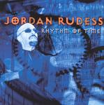

| Artist: | Jordan Rudess |
| Title: | Rhythm Of Time |
| Label: | Magna Carta MAX-9068-2 |
| Length(s): | 59 minutes |
| Year(s) of release: | 2004 |
| Month of review: | [12/2004] |
| 1) | Time Crunch | 6.26 |
| 2) | Screaming Head | 7.25 |
| 3) | Insectsamongus | 9.31 |
| 4) | Beyond Tomorrow | 9.55 |
| 5) | Bar Hopping With Mr. Picky | 4.36 |
| 6) | What Four | 6.50 |
| 7) | Ra | 7.53 |
| 8) | Tear Before The Rain | 6.39 |
Opener Time Crunch is an open sounding track led on by duels between fast and swishy synths with guitar. The fast pace and open sound give this track a happy feeling.
Screaming Head has a somewhat more jazzy character. The drums on the main theme are more choppy and the synth melody is more dragging. Even though still some of the openness remains, the dragging of the synth hands it a more whining feel. Having said that the track is strewn with odd hop overs of the fingers on the keys, creating a playful idea. What it also does is create the idea that this track is more about the players' fun than it is about the listener's fun. Towards the end the track does settle more into a general direction, but they've lost me by then.
Insectsamongus gives more room for guitar at some moments, this way guitar and synth can go over the top in unison. Yes, quite. The second part of the track is a bit more laid back, a tad spacy almost, more melodic and less muscle bound. Far more listenable.
After all this violence the reprieve of Kip Winger's voice is significant. The track could probably best be described as a rock ballad, with all the regular pros and cons: we get to hear some nice vocals, musical solos in an atmosphere that's a bit on the sticky side. Due to the track's length there's ample room for instrumental sections, which is used in a fitting way. Still not my fave, but a lot more balanced and more directed towards melody.
The Bar Hopping is more friendly, mostly an elongated key solo with significant guitar. What Four contains a section that's almost classical type virtuoso stuff, and once again is little less blown up than the first couple of tracks. We also hear more spacy stuff on this one. Ra is once again fast paced but pretty musical stuff.
Tear Before The Rain starts pretty atmospheric, leading into piano vocal stuff. Due to the highish backing vocals there is almost a semblance to one of those slower ELO tracks, the ones that are nice. This closer is definitely the most appealing track on the album for me.
This album will surely be appreciated by those already into Rudess material. If your take is "I liked the previous one, will I like this?" you will not be disappointed. If you didn't like previous material, like me, don't bother about this one.